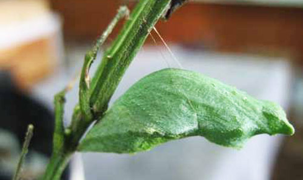
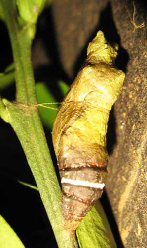

The pupae are stout, rugose, and about 30 mm long. They are attached to the thicker stems of the host plant, or to adjacent sticks and rocks. The color is dimorphic, typical for many swallowtails, being either pale green or pink-brown with other variable cryptic markings. The green form is usually marked dorsally with yellow. The color pattern imitates the dominant surrounding color to which the pupa is attached. The pupal duration is variable. In some areas, it is about 30 days in spring, reducing to 18 days in summer, but often those pupae formed in captivity during autumn will not produce adults until the following spring, or even longer with one record of 280 days.
Pale green pupa of the lime swallowtail, Papilio demoleus Linnaeus. Photograph by Marina Young, RADA, Jamaica.
Pink-brown pupa of the lime swallowtail, Papilio demoleus Linnaeus, showing white band. Photograph by Marina Young, RADA, Jamaica.